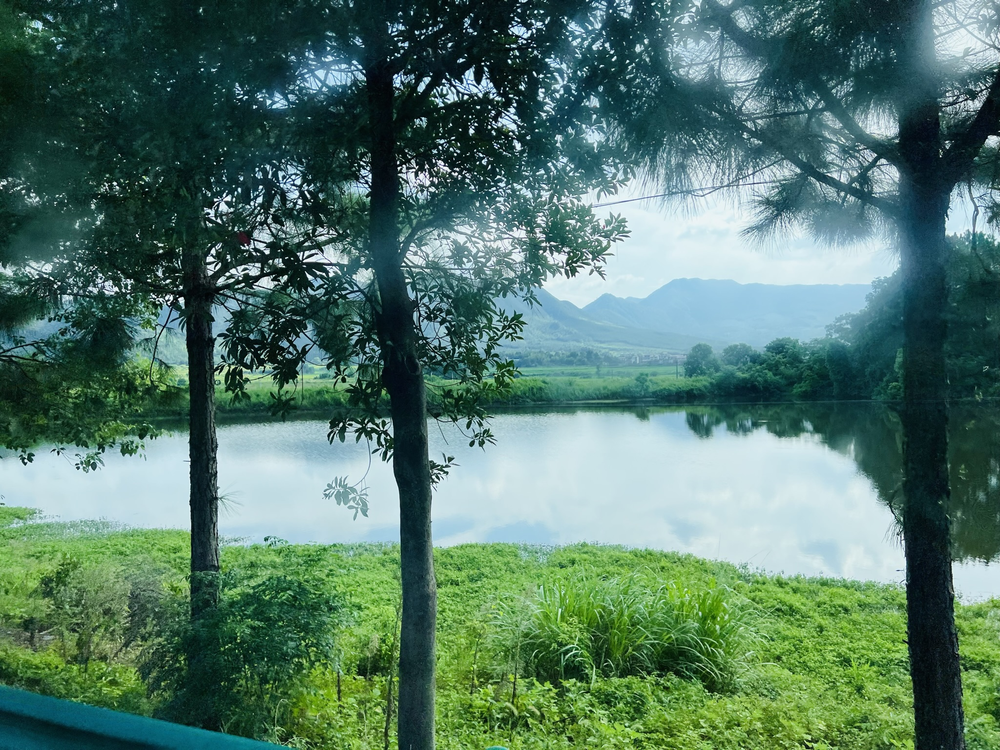

说来惭愧，我个人很少会在每一段活动结束之后写下类似于“游记”的文字。抛开那些略显抽象的活动不谈，当我用久已生疏的笔墨临摹完脑海中某一段缤纷灿烂的回忆时，就好像为它在生命的尽头画上了一个孤独冰冷的句号。从此这段回忆似乎就成为了故纸堆里僵死的文字，而不能成为永远燃烧在我们心中的火焰了。然而，感知到惜羽老师可能会在我超过ddl后把我一并封存在故纸堆里的气场，我决定还是将我心中随机掉落的感想拼凑一下，或许未来的生物能够通过这些碎片，来复原一些人类灵魂中不那么糟糕的内容。
倘若翻看过2023年泉州支教的志愿者感想，再和今年支教的过程一对比，就不难发现今年可以称为相对平稳的一年。我们有学校和睿益志愿者的支持，我们也有成绩优秀且配合教学的同学，我们还有认真负责的领队与善良优秀的志愿者老师。从我个人的课程经验来看，我和同学们似乎也没有产生太多的分歧与隔阂，绝大多数同学的课堂状态都很认真投入。由于同学们的整体素质都很高，社区探索也自然是拿出了无数份精彩的答卷。此外，今年并不需要由我们来监督同学们的晚自习，所以晚上也有充足的时间进行备课和休息。总体来看，这似乎是一段无功无过、平稳和谐的短期支教故事。
真的是这样吗？
没有了学校的反对，每位同学都已经被通知了夏令营的到来，我们似乎就不再有机会引领同学们深入内心，共同叩问此行的意义了。没有了晚自习的共处，每位同学和我们的交流都止步于下午5点40分的铃声，我们似乎就不再有机会走进同学们的生活，为此行赋予具体的意义了。没有那么多看得见摸得着的改变，没有那么多惊讶的赞叹和激情的颠覆，所有的一切只是安静地流淌过去。这就难免像梦幻泡影一般，显得有些不真实了吧。惜羽老师说BB像“乌托邦”，美好到不真实的地步，但我们和同学们终究还是要跌回到冰冷的现实世界。听到一位朋友说BB有些“自我感动”，我先是一怔，后来又觉有些难以反驳。对于短期支教来说，未必能留下多少知识的印记，也未必能解决多少具体的问题，那么剩下的似乎不就是自我感动了吗？
早就听说，BB的理念是“点燃一把火，而不是灌满一桶水”。这个比喻其实十分有趣：水是平静稳定的实体，而火只是飘忽闪烁的等离子体，就像我的精神状态一样不甚稳定。倘若我们此行的目的是“灌满一桶水”，那现在这桶水里的知识和具体问题应该已经全都漏光了。我的课程为同学们介绍了人工智能的经典技术和社会影响，但我不太相信同学们能在没有机会运用这些知识的情况下将它们一直铭记到大学，这有违脑科学的基本认识。我所期望的是，在知识和问题的水漏光之后，是否还会留下一些其他的东西？
有人说，“教育的就是把所有知识忘掉之后，你仍然记得的东西”；也有人说，“才华、勇气、骄傲、荣誉，都可能随着时间慢慢隐入尘烟。唯有内心的信念，会托住人生所有的风浪”。我想我也应该给同学们写一段类似的“名句”，但我拙朴的文字读来估计会有些尴尬。不过这也没关系。也许他们现在就已经不再记得我们讲过的所有知识，但他们或许会记得惜羽老师坚定执着地追寻心中的永恒，记得婉宁老师温柔细腻地对待每个生命，记得优优老师面对未来的自信与洒脱，记得舒涵老师在神秘的梦境中发现我们内心的光芒……他们或许也会记得，曾经有过这样一群人，在黑暗冰冷的现实大海上，一起守护着一颗理想主义的小小火苗，守护着一个略显天真的，关于善良、热爱、希望与信念的童话故事。也许他们会感到奇怪，也许他们会感到不值得，但也许，当大海的风浪袭来，他们将会与我们一同守护BB的火焰，直到永远。
水，会随着环境变形，会沿着缝隙一直向下，最后流入深沉的大海；而火，就有些许的执着，它只在值得燃烧的环境中燃烧，一旦燃烧就永不止息，直到引燃下一处空间，或者迎接命中注定的消逝。非要说的话，我认为我们的生命更像火：不会像水那样恒常地存在，只会在热烈燃烧后走向永远的沉寂。但这也有个好处：即使知识的水已经流淌得不见踪影，灵魂间被点亮的火焰仍然会在那里燃烧下去。那是简单、纯粹、理想主义的火焰，从故纸堆里的人类群星身上传递到现在BBer们的身上，又继续传递到我们的同学身上。这一点小小的火焰，也会随着同学们的生命传递下去，点亮县城以外更广阔的天地。即使那时我们的躯壳已经燃烧殆尽，我们曾经的“自我感动”，或许也会继续感动着无数拥有善良心灵的生命。
所以我们班的同学们会记得绍峰老师的什么事情呢？也许会记得社区探索时一直带着大家坐公交车吧。也许会记得车窗外，南国的松林在热风中摇曳，赣江丰沛的水系环绕着闪闪发亮的稻田；南岭的湿云绸缎一样漂浮，滴水敲打着绿叶浸染出满坡青翠。
希望你们能够走向更广阔的世界，也能够永远热爱脚下的这片土地。
希望你们的生命也像这片土地一样，炽烈而平和，鲜活而宁静。
我永远真诚地如此希望。
